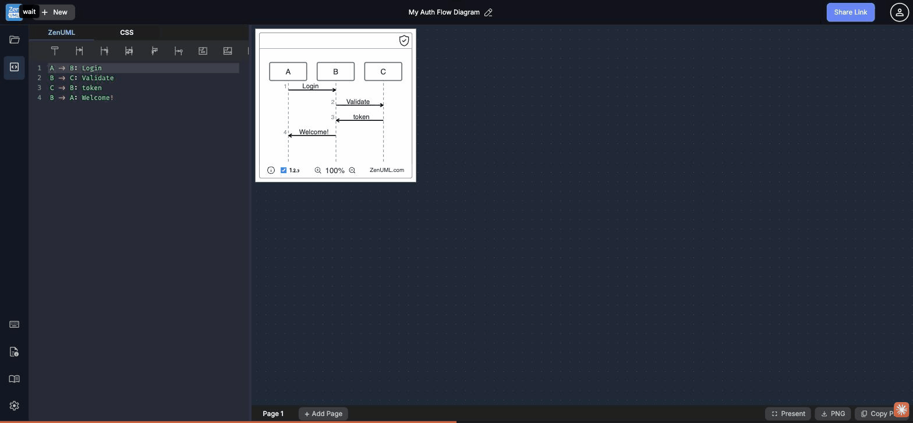

Tab order traversal · Focus ring visibility · Screen-reader reachability · Skip links

Every interactive element — sidebar icons, toolbar buttons, header buttons — uses the browser's 1px default focus outline in rgb(0, 95, 204). Against the dark #1e293b backgrounds this produces a contrast ratio well below the WCAG 2.4.11 (AA, 2024) minimum: a focus indicator must have at least a 3:1 contrast ratio against adjacent colors AND enclose an area ≥ the perimeter of a 2 CSS px border around the component.
Impact: Keyboard-only users and low-vision users relying on focus rings cannot reliably track where keyboard focus is located. This is a WCAG 2.2 Level AA failure.
outline: 2px solid #60a5fa; outline-offset: 2px; on all focusable elements, or use the :focus-visible pseudo-class with a 2px+ ring that passes 3:1 against the adjacent background color. The Share Link button's 1.5px white ring is closer but still undersized.The CodeMirror editor is the primary work surface of the application, yet keyboard users must Tab through at least 20+ interactive elements — 3 header buttons, 6 sidebar icons, 8+ toolbar buttons — before the editor's textarea receives focus. The first Tab stop is the "New" button in the header, not the editor.
Impact: Keyboard-only users opening the app to write ZenUML code face an excessive navigation burden before reaching the input surface. WCAG 2.1 Success Criterion 2.4.3 (Focus Order) requires a "meaningful sequence" — placing the primary editing canvas last in tab order violates this criterion.
tabindex="1" to the CodeMirror wrapper (or use CodeMirror's built-in tabIndex option) so the editor is the first Tab stop after the skip-nav link. Alternatively restructure DOM order: editor before sidebar/toolbar in source order, use CSS for visual layout.All 6 left-sidebar icon buttons (My Library, Code Editor, Keyboard Shortcuts, Cheatsheet, Language Guide, Settings) are individually focusable and appear consecutively in the tab order. For a tool-switching sidebar this is unnecessary: only the currently active panel icon needs to be reachable; the others could use a roving tabindex pattern (arrow keys to navigate icons, single Tab to leave the group).
Impact: 6 extra Tab stops between the header and the toolbar adds navigation friction. Combined with GAP-17-002 this means keyboard users Tab 20+ times to reach the editor.
role="toolbar" or role="navigation", make only the active icon tabindex="0" and the rest tabindex="-1", then use arrow key handlers to move between icons. This compresses 6 stops into 1.All 8+ toolbar insert buttons (New participant, Async message, Sync message, etc.) have ariaLabel: null. The visible content is a Material Icons ligature string ("person_add", "swap_horiz", etc.) which is what screen readers announce verbatim. Users with assistive technology hear "person add button" rather than "Insert new participant".
This was also partially documented in Case 14 for sidebar icons. The toolbar buttons are a separate, wider set of the same pattern.
aria-label to each toolbar button: aria-label="Insert new participant", aria-label="Insert asynchronous message", etc. Also add title attributes so sighted keyboard users see tooltips on focus (addresses Case 07 GAP-07-001 too).There is no "Skip to editor" (skip-nav) link at the top of the page. On every page load or tab switch, keyboard users must Tab through all header and sidebar controls to reach the editor. This is standard accessibility infrastructure expected by WCAG 2.4.1 (Bypass Blocks, Level A).
Impact: Lower severity because GAP-17-002 (editor tabindex priority) would be the more impactful fix; a skip link is a complementary safeguard. However WCAG 2.4.1 is a Level A criterion, making this a baseline conformance failure.
<a href="#editor" class="skip-nav">Skip to editor</a> as the first element in <body>. Show it on focus with :focus { position: fixed; top: 0; left: 0; ... }. Assign id="editor" to the CodeMirror container.